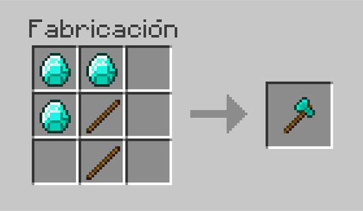

Mesa de crafteo
Mesa de crafteo
El hacha es una de las herramientas de Minecraft.
Su función principal es romper materiales de madera principalmente, aunque muchas veces es usado como arma en combate
Para conseguirla se tienen que poner dos palos y tres de cualquier mineral en una Mesa de crafteo